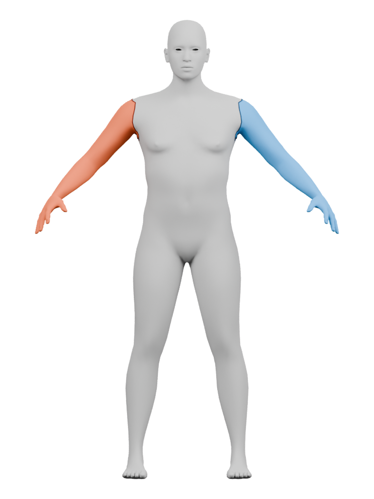
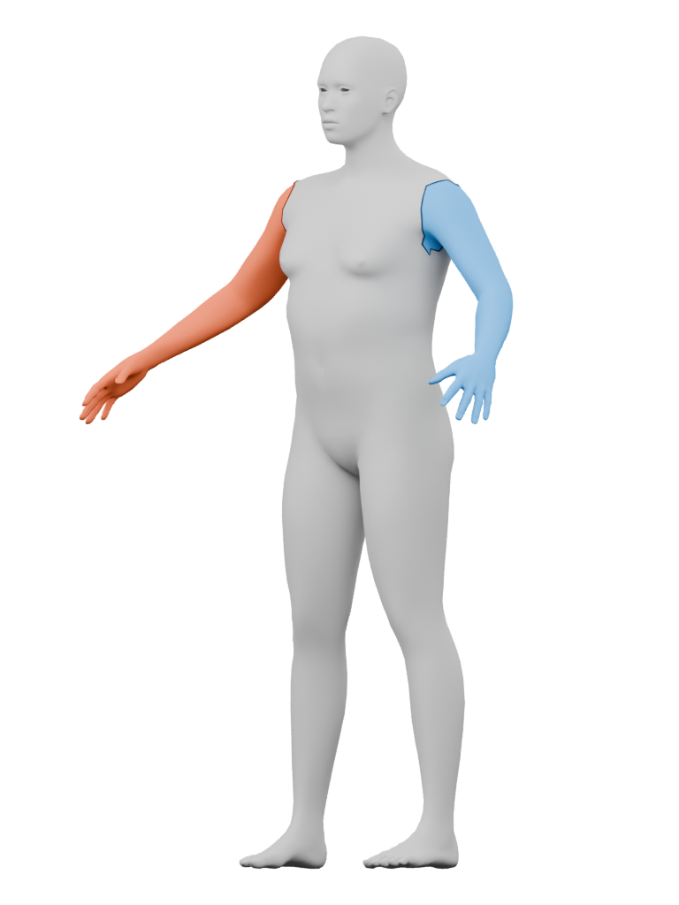
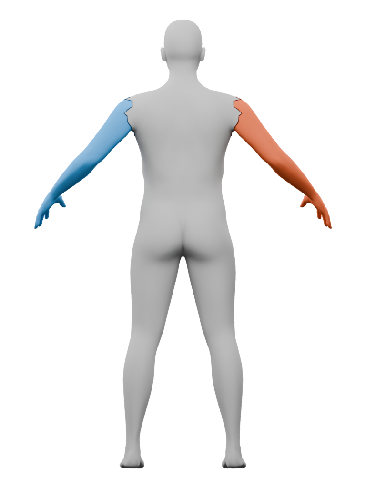

Ari · source attachment paths
Two closed paths through the fixed shoulder-top, front, underarm and rear draft references. Each follows 29 body-mesh edges. Blue and rust show the computed source face sides; the full body remains present.
Proximal attachment references retained; garment seams and fit remain unqualified. The paths reach the shoulder and inner arm/torso connection. Their angular rear and underarm turns are literal source edges, not finished designer seams. Colors through the hands do not represent sleeve or cuff coverage.
This is a body-only source chart. Eyes, hair, rig, skin look and the jacket are omitted. The dark display tubes deliberately touch the skin; they do not establish clearance.


